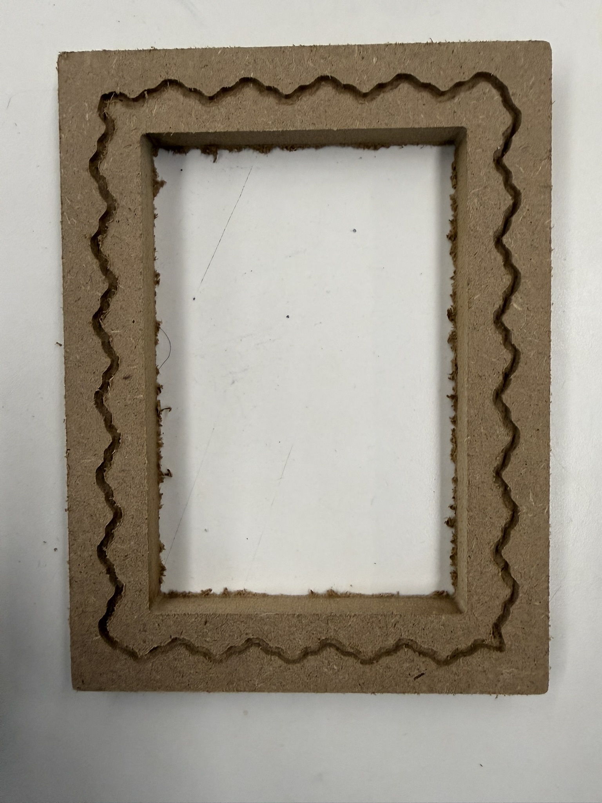

Project 08
I designed a photo frame svg in illustrator and machined it on the shop bot. It was fun using illustrator after a while. Initially, I designed something decently more complicated with a few layers, trying to replicate a pattern like the image below but ended up going for something much simpler due to time constraints at the end. Generally, I thought this was a pretty fun process. If I had planned around the cnc earlier, I thought building a chassis design into MDF and moulding would have been a fun experiment for my final project. I got to see the vaccuum forming process in action and that was really cool!
